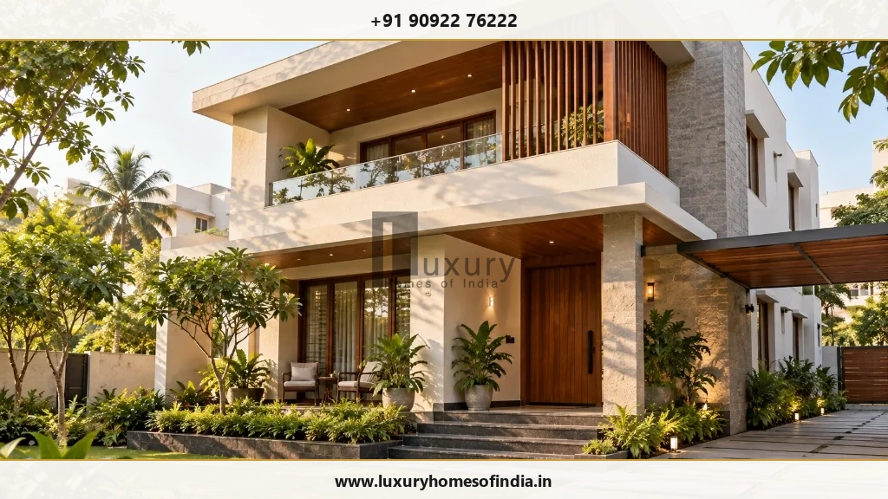
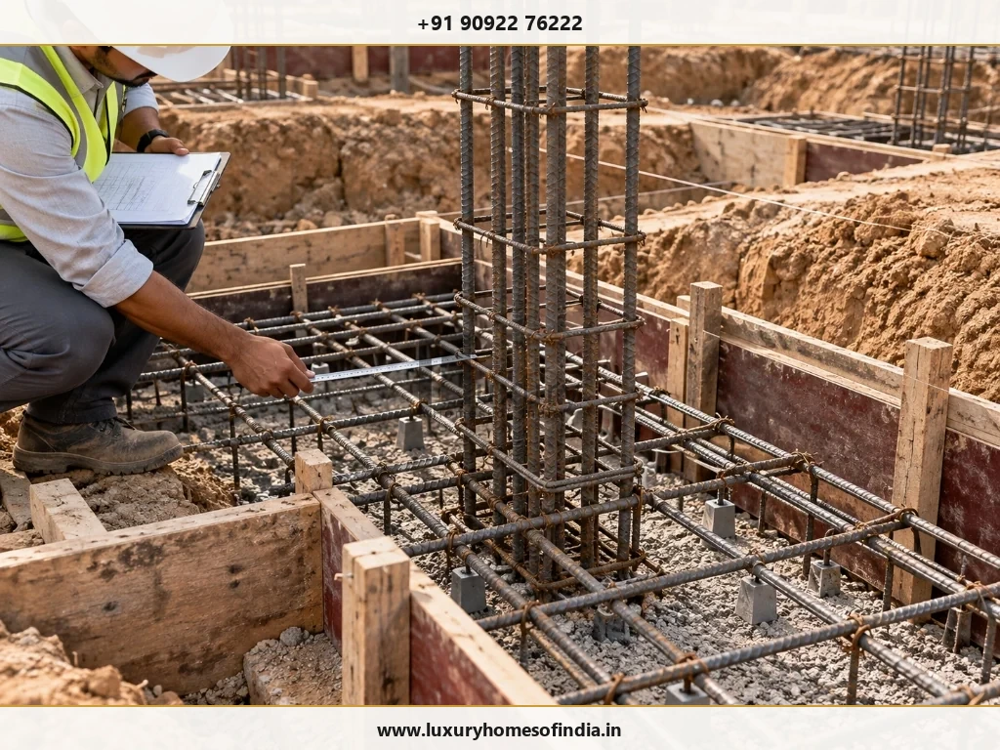
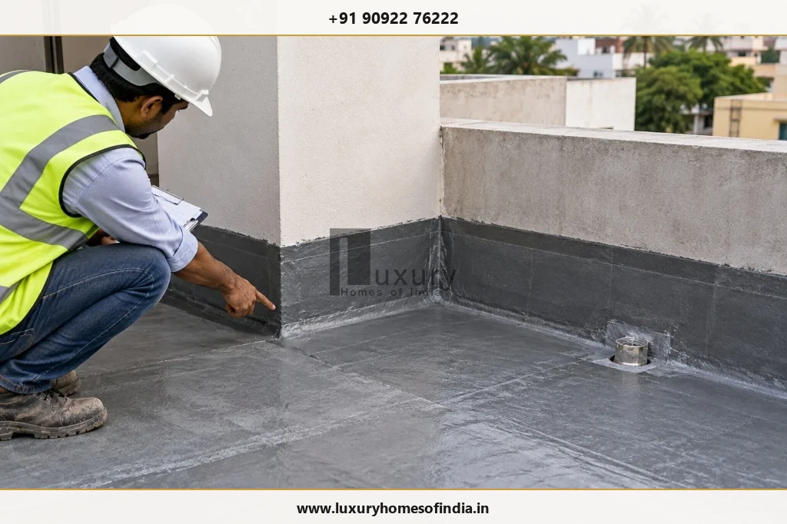
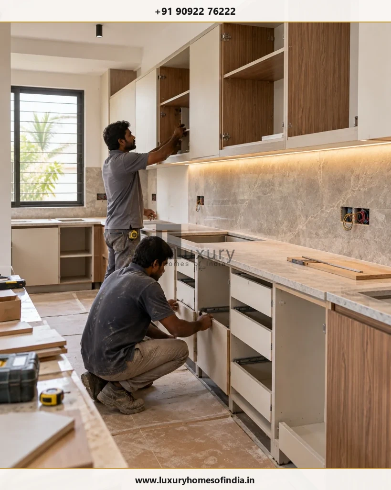

Building a house involves a sequence of connected activities, from site assessment and foundation construction to structural work, building services, finishes, inspections and final handover. For homeowners planning an independent house or luxury villa in Chennai, understanding the foundation-to-handover construction timeline helps with budgeting, design decisions, material procurement and move-in planning.
A conventional independent house may take approximately 8–14 months from the commencement of construction to handover, while larger multi-storey homes and highly customised villas can require longer. These are indicative planning estimates, not guaranteed delivery periods. The actual schedule depends on plot conditions, structural design, approvals, the size of the home, interior specifications, material availability and the coordination of contractors.
A realistic programme identifies dependencies, inspection points, procurement deadlines and time allowances for weather and unforeseen conditions. This guide explains the main stages, common delays and practical checks homeowners should discuss with their construction team.

Executive Summary: Planning Your Chennai Home Construction Timeline
- Realistic Durations: A standard G+1 independent house typically takes 8–14 months, while bespoke luxury villas require 12–18 months or longer depending on custom finishes.
- The 14 Stages: Divided into Pre-construction, Civil Structural Framework, Concealed MEP Services, Architectural Finishes, and Final Handover.
- Never Sum Stage Durations Mechanically: Some trades overlap seamlessly (e.g., masonry with electrical first fix), while others require mandatory curing and testing windows.
- Monsoon Buffer: The Northeast Monsoon (October–December) in Chennai requires strategic scheduling so roof slabs are cast and interiors protected before heavy rainfall.
- Inspection Holds: Critical engineering holds (foundation rebar inspection, cube compressive tests, terrace ponding tests) must never be bypassed for speed.
How long does it take to build a house in Chennai?
The construction period depends on the building's size, number of floors, complexity and agreed scope of work. The following ranges are retained from the supplied draft as initial planning estimates; they are not independently verified industry benchmarks.
| Project Type | Indicative Planning Range | Key Structural & Finish Drivers |
|---|---|---|
| Simple ground-floor house | 6–10 months | Single slab cycle, straightforward shallow footings, standard local finishes. |
| Standard G+1 independent house | 8–14 months | Two floor slab cycles, coordinated internal staircase, standard modular interiors. |
| Larger G+2 residence | 10–16 months or longer | Three slab cycles, stilt parking coordination, elevator shaft civil works, multiple wet zones. |
| Customised luxury villa | 12–18 months or longer | Complex architectural cantilevers, double-height volumes, imported stone, central automation, extensive landscape. |
Clarify whether the quoted duration starts at agreement signing, approval completion, site mobilisation, foundation work or another defined milestone. Design, statutory approvals, interiors and external development may be included or excluded depending on the contract.
Important Rule of Scheduling: Do not add every stage duration in this article to calculate a completion date. Some activities overlap, while others depend on inspections, material delivery, curing, testing or completion of preceding work. Ask for a project-specific construction programme (Gantt chart) with a defined start date, milestones, dependencies and handover criteria.
The 14 stages from foundation to handover
Every residential construction project follows a systematic engineering sequence. Understanding each milestone enables homeowners to monitor progress objectively and participate meaningfully in critical approvals.
1. Site assessment and pre-construction planning
Before excavation, the project team needs to establish the plot dimensions, site access, building requirements and relevant ground conditions.
Typical activities include boundary and level verification, review of available property information, appropriate soil investigation (SPT boreholes), preliminary foundation planning and preparation of the project brief.
Homeowner check: Confirm that the plot information, proposed scope, technical assumptions and responsibilities are documented before finalising the quotation.
2. Architectural design and building approvals
Architectural planning establishes the layout, circulation, lighting, ventilation and appearance of the home. Structural design and plumbing, electrical and other service layouts must be coordinated with the architectural drawings.
Approval requirements depend on the property's location and the proposed development. Confirm the relevant authority (Greater Chennai Corporation, CMDA, or DTCP), required documents and permissions before commencing work that requires approval.
Homeowner check: Finalise major room dimensions, staircases, bathrooms, kitchen arrangements and other important layout decisions early to reduce later changes and rework.
3. Site preparation and layout marking
The site is cleared as required, access and storage are organised, and building lines and reference levels are established from the relevant drawings.
Correct setting-out using total station or precision center-line pegging helps prevent errors in setback compliance under Tamil Nadu Combined Development and Building Rules (TNCDBR-2019), dimensions and building position.
Homeowner check: Have the responsible professional verify the marked building layout and reference levels before excavation begins.
4. Excavation and foundation construction
Foundation work follows the approved structural design and the conditions encountered on site. Activities may include excavation, inspection of founding conditions, preparation of the base (PCC 1:4:8 bed), reinforcement, formwork, concrete placement, column starters and specified backfilling.
The duration can change if groundwater, unexpected soil conditions (such as clayey black cotton pockets or marine sand along ECR/OMR) or specialised foundation requirements (pile foundations or raft slabs) are encountered.

Homeowner check: Arrange the specified reinforcement and formwork inspections before concrete placement. Follow the engineer's requirements for concrete curing, strength verification (cube testing as per IS 516) and subsequent work.
5. Plinth and ground-floor preparation
Depending on the foundation system, this stage may involve plinth beams, backfilling, compaction, specified anti-termite treatment (as per IS 6313), ground-floor base preparation and coordination of underground services.
Finished floor levels (FFL) must be considered alongside the surrounding road level, site drainage and access. These decisions deserve particular attention on Chennai plots where heavy seasonal monsoon rainfall can cause local road flooding.
Homeowner check: Confirm the floor level, drainage strategy and underground service routes before the relevant areas are concealed.
6. Structural framework: columns, beams and slabs
The structural framework establishes the building's load-bearing system. The sequence may include reinforcement, formwork, concrete placement, staircases and successive floor cycles.
The time required depends on the structural design, number of floors, spans, construction method and site logistics. For high-grade concrete (M20 or M25), props beneath slabs and beams must remain undisturbed for the mandatory stripping periods mandated under IS 456:2000.
Homeowner check: Follow the structural inspection schedule and retain relevant records. Changes to structural elements should be reviewed and authorised by the responsible structural engineer.
7. Masonry and wall construction
Brick or block walls (AAC blocks, solid concrete blocks, or wire-cut red bricks), partitions, door and window openings, and other specified masonry are constructed according to the coordinated drawings. Work may overlap with other completed areas when the sequence is appropriate.
Homeowner check: Verify wall positions and opening dimensions before plastering, especially around kitchens, bathrooms, doors, windows and built-in furniture.
8. Electrical and plumbing first fix
Conduits, junction boxes, wiring routes, water-supply pipes (CPVC/PPR), drainage lines (SWR/PVC) and other specified concealed services are installed before walls, floors or ceilings are closed. Air-conditioning, data, automation and other specialist provisions may also be included.
Homeowner check: Approve switch positions, lighting points, appliance provisions, bathroom outlets and kitchen connections. Complete the required inspections and pneumatic or hydraulic pressure tests before concealment.
9. Plastering and waterproofing
Plastering prepares surfaces for finishing, while waterproofing protects specified wet and exposed areas, including terraces, bathrooms, utility areas and balconies.
The work sequence depends on the selected systems (cementitious coatings, elastomeric liquid membranes, or APP modified bitumen), substrate condition, product instructions and technical specifications. Required curing, drying and testing periods must be included in the programme.

Homeowner check: Obtain records of specified inspections and water-ponding tests (minimum 48 to 72 hours for toilets and terraces) before tiles, screed or other finishes conceal the treated areas.
10. Flooring, doors and windows
Flooring (Italian marble, vitrified tiles, granite, or hardwood), wall tiles, stonework, doors, windows (system aluminium or UPVC), glazing, hardware, skirting and staircase finishes are installed according to the approved specifications.
Large-format tiles, premium stone, custom joinery and specialised glazing may require additional procurement or installation time.
Homeowner check: Approve product samples, dimensions, finishes, hardware and installation details before customised products are ordered.
11. Painting, electrical fittings and plumbing fixtures
This stage brings together finished surfaces and visible fittings, including putty coats, primer, topcoats, switches, lights, fans, sanitaryware, taps, showers and final plumbing connections.
The schedule should allow for surface preparation, required drying periods between coats, installation adjustments and functional checks.
Homeowner check: Verify that installed products match the approved selections and that relevant electrical earth-resistance and plumbing leak checks are documented.
12. Interior fit-out and external development
Depending on the contract, this stage may include modular kitchens, wardrobes, false ceilings, bespoke joinery, smart-home equipment, compound walls, gates, driveways, external drainage and landscaping.
The scope varies significantly between a basic house and a customised luxury villa. Fabrication and procurement should begin early enough to avoid delays to the overall programme.

Homeowner check: Maintain a written list of included and excluded works, with clear responsibility for each contractor, procurement item and installation.
13. Testing, snagging and final inspection
Before handover, the completed home should be inspected systematically. The scope may cover doors and windows, visible finishes, plumbing pressure, drainage slopes, electrical points, earthing, lighting circuits, equipment operation and the required test records.
Prepare a comprehensive snag list that records each defect, its exact location, the responsible trade and the agreed rectification date.
Homeowner check: Verify that defects have been addressed and that outstanding work is recorded rather than relying only on an informal final walkthrough.
14. Documentation and final handover
Handover involves the delivery of keys, agreed documentation and completed contractual deliverables. Depending on the project, this may include applicable completion or occupancy-related documents, approved and as-built drawings where required, equipment manuals, warranties, test records and final account reconciliation.
The exact documentation depends on applicable statutory requirements and the terms of your construction agreement.
Homeowner check: Obtain the agreed documents, record any outstanding items and confirm the process for post-handover support and defect liability in writing.
Construction timeline at a glance
The table below consolidates the indicative durations from the planning estimates. The ranges are initial planning baselines and need technical review for each specific site.
| Stage # | Stage Description | Indicative Duration | Execution Dependency |
|---|---|---|---|
| 01 | Site assessment and planning | 1–3 weeks | Pre-requisite for structural design and quotations |
| 02 | Design and approvals | Several weeks to a few months | Pre-requisite for site mobilisation and permit issuance |
| 03 | Site preparation and marking | 2–7 days | Pre-requisite for excavation |
| 04 | Foundation construction | 3–6 weeks | Critical path; dependent on ground conditions |
| 05 | Plinth and ground-floor preparation | 1–3 weeks | Follows foundation backfilling and compaction |
| 06 | Structural framework (columns, beams, slabs) | 2–4 months or longer | Sequential floor cycles; dependent on IS 456 curing |
| 07 | Masonry and wall construction | 3–6 weeks | Can partially overlap with upper-floor structural works |
| 08 | Electrical and plumbing first fix | 2–4 weeks | Runs parallel to or immediately follows wall chase cutting |
| 09 | Plastering and waterproofing | 3–6 weeks | Dependent on plumbing pressure test sign-off |
| 10 | Flooring, doors and windows | 3–6 weeks | Follows wet plaster curing and waterproofing ponding tests |
| 11 | Painting and fixtures | 3–5 weeks | Requires dust-free conditions; follows wall drying |
| 12 | Interior fit-out and external works | 3–8 weeks or longer | Off-site fabrication parallel; on-site assembly sequential |
| 13 | Snagging and inspection | 1–3 weeks | Systematic pre-handover audit of all services & finishes |
| 14 | Final handover & documentation | 1–2 weeks | Delivery of as-builts, warranties, and key handover |
Reminder: These durations must not be summed mechanically. The project manager should identify which activities can run in parallel, which require prior completion, and which depend on procurement, inspections, curing or testing.
What can delay a house construction project in Chennai?
Understanding potential bottlenecks in advance allows you to anticipate challenges and implement contingency measures before timelines slip.
1. Design changes
Late changes to room layouts, electrical points, bathroom fixtures or flooring selections can trigger structural recalculations, masonry rework, re-plumbing and delayed procurement.
Planning response: Freeze the relevant architectural and services drawings before starting dependent civil activities. Establish a clear written change-control procedure that calculates both cost and schedule impact before any modification is approved.
2. Approvals and documentation
Incomplete drawing submissions, scrutiny queries or delays in municipal processing through the Single Window Portal can delay on-site commencement.
Planning response: Track statutory planning permissions separately from the construction programme and verify that all pre-requisite sanctions are in place before demobilising current living arrangements.
3. Monsoon and site conditions
In Chennai, the Northeast Monsoon (October to December) frequently causes localized waterlogging, interrupting excavation, foundation casting, external plastering, and terrace waterproofing.
Planning response: Plan the construction timeline so that sub-structure and roof slabs are completed before October. Maintain continuous dewatering pumps on site and never apply external paints or waterproof coatings onto water-saturated surfaces.
4. Material procurement bottlenecks
High-specification items such as thermal-break aluminium window systems, imported Italian marble, custom veneer joinery, and specialized sanitaryware frequently have lead times of 6 to 12 weeks.
Planning response: Identify all long-lead items during the pre-construction phase. Place orders and approve shop drawings well in advance of site readiness.
5. Unforeseen ground conditions
Chennai displays diverse geotechnical conditions—from rocky strata in Guindy to loose coastal sand along ECR and expansive clay (black cotton) in parts of Velachery and Madipakkam. Unanticipated soil behaviour or high water tables can slow initial earthwork.
Planning response: Always commission a professional soil investigation report with boreholes before finalizing structural drawings. Allocate a specific contingency budget and schedule allowance for earthwork variations.
6. Contractor coordination and payments
Employing separate, uncoordinated subcontractors (civil contractor, electrician, plumber, carpenter, painter) frequently leads to finger-pointing, site access disputes, and schedule deadlocks. Disputed payment variations further compound delays.
Planning response: Appoint a single-point turnkey builder or an experienced construction manager. Tie payments strictly to unambiguous, measurable physical milestones rather than elapsed calendar weeks.
| Delay Trigger | Typical Schedule Risk | Proactive Homeowner Mitigation Strategy |
|---|---|---|
| Mid-stream design tweaks | 2–6 weeks | Freeze GFC drawings prior to casting; sign off on 3D visualisations early. |
| Northeast Monsoon rainfall | 3–8 weeks | Cast roof slab before October; schedule interior works during rainy months. |
| Specialist joinery & glazing | 4–10 weeks | Place purchase orders during brickwork stage; verify factory fabrication lead times. |
| Statutory scrutiny queries | 4–12 weeks | Engage registered architects familiar with Chennai GCC/CMDA Single Window rules. |
| Contractor cashflow & disputes | Indefinite | Use escrow or milestone-verified disbursements with 5% defect retention. |
How homeowners can keep the programme on track
Active, organised homeowner governance is one of the most effective tools for maintaining project momentum. Use this practical 10-point checklist throughout planning and execution:
- 1. Confirm Commencement Scope: Ensure project scope, Good for Construction (GFC) drawings, and statutory commencement conditions are verified before ground is broken.
- 2. Agree on a Written Programme: Insist on a detailed baseline Gantt chart with weekly progress milestones, critical dependencies, and defined inspection holds.
- 3. Identify Long-Lead Items Early: Maintain a procurement tracking schedule for tiles, sanitaryware, joinery, and windows with mandatory order dates.
- 4. Finalise Selections Ahead of Need: Select bathroom fixtures and tiles at least 4 weeks before plumbing first fix begins.
- 5. Coordinate Engineering Drawings: Verify that architectural, structural, electrical, and plumbing drawings have been cross-checked to avoid clash rework.
- 6. Enforce Hold-Point Inspections: Attend or receive documented reports for structural reinforcement, plumbing pressure tests, and waterproofing ponding before closure.
- 7. Request Regular Progress Reports: Require weekly photo updates, drone site overviews, and monthly milestone reconciliation reports.
- 8. Document Changes in Writing: Never issue verbal instructions on site. Use written change orders specifying both cost impact and schedule addition.
- 9. Track Rectifications Against Deadlines: Record defect notices with assigned target resolution dates rather than deferring issues to final handover.
- 10. Complete Structured Snagging: Conduct a systematic pre-handover snag audit room by room before releasing the final milestone payment.
Ask the construction team who coordinates the programme, how progress is reported and how delays or changes are escalated. These practical arrangements help homeowners understand what has been completed, what is outstanding and which decisions need attention.
Why quality should never be sacrificed for speed
A shorter schedule is not necessarily a better construction programme. Some work requires specified curing, drying, inspection, testing or procurement time.
Mandatory Engineering Windows That Cannot Be Rushed
Attempting to accelerate construction by cutting corners on essential chemical and physical processes results in irreversible defects. Homeowners should never allow builders to bypass:
- Concrete Curing (IS 456:2000): R.C.C. slabs and columns require continuous moist curing for a minimum of 7 to 14 days to achieve structural design strength. Early de-shuttering leads to micro-cracking and slab deflection.
- Cube Strength Testing (IS 516): Concrete compressive strength must be laboratory-verified at 7 days and 28 days using NABL-calibrated testing apparatus.
- Waterproofing Ponding Tests: Bathrooms and terrace slabs must undergo a continuous 48-to-72-hour standing water test before tiling or screeding is commenced.
- Plaster Drying Before Painting: Internal and external cement plaster must cure for 14 days and dry thoroughly to avoid moisture entrapment, blistering, and efflorescence.
The schedule should protect structural inspections, concrete requirements, concealed service checks, waterproofing tests, surface preparation and final functional checks. These activities should not be removed simply to achieve an earlier target date.
Efficient construction comes from coordinating the sequence, reducing avoidable rework and making timely decisions while meeting the approved technical specifications.
Frequently asked questions
The supplied planning ranges suggest approximately 8–14 months for a conventional independent house, with longer periods possible for larger or highly customised homes. The actual duration depends on the project scope, approvals, design, site conditions, procurement and finishing requirements. These estimates require technical validation.
Not always. Confirm whether the quoted programme starts at agreement signing, approval completion, site mobilisation or foundation work, and whether interiors and external works are included.
Structural work and finishing can both take substantial time. Multi-storey construction involves repeated floor cycles, while bespoke interiors and specialised materials can extend finishing and procurement.
Some work can overlap when the construction sequence and coordinated drawings permit it. Concealed services must be inspected and tested as specified before the relevant surfaces are closed.
Rainfall may affect excavation, external work, site access and moisture-sensitive finishes. The impact depends on the weather, site drainage, construction stage and technical requirements.
Select major products early enough to confirm dimensions, compatibility, specification and delivery. Late decisions can disrupt procurement or require changes to other work.
Inspect the completed work, close or document the agreed snag list, verify relevant system operation and collect the contractual documentation, applicable approvals, manuals and warranties.
A contract can specify a completion date and define responsibilities and remedies. Actual delivery may still be affected by approved variations, unforeseen conditions and other events addressed by the contract. Review extension provisions and delay clauses carefully.
Plan your construction timeline with clarity
A successful home-construction programme balances design decisions, structural work, building services, finishes, inspections and handover. A realistic schedule makes these dependencies visible and helps homeowners prepare for procurement, approvals and potential delays.
When comparing construction partners, ask how the proposed programme will be developed, who will coordinate the work, how quality checks will be documented and what deliverables are included in the handover.
Luxury Homes of India provides residential construction and turnkey project execution services, according to its published company website. Homeowners can discuss their project requirements and request a scope-based construction programme before committing to a timeline.
Discuss Your Home Construction Requirements with Luxury Homes of India
Plan your residential construction project with transparent milestone programmes, engineered quality controls, and single-point turnkey accountability across Chennai.
- Website: https://www.luxuryhomesofindia.in/
- Phone: +91 90922 76222
- Email: info@luxuryhomesofindia.in
- Address: #85, 4th Floor, Lotus Tower, Guindy, Chennai – 600032
Disclaimer: All construction durations in this article are indicative planning estimates, not guaranteed delivery periods. Actual timelines depend on the property, design, scope, approvals, procurement and site conditions. Obtain a project-specific programme from the appointed construction professional.